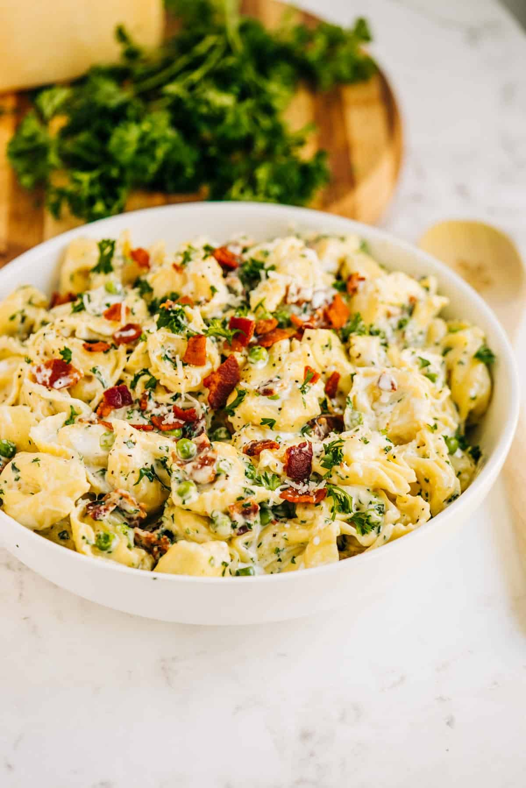

Tortellini Bacon Carbonara

Tortellini Bacon Carbonara is a rich and creamy alternative from the
traditional Italian recipe. Serve with garlic bread and a salad. Enjoy!
Tortellini are pasta originally from the Italian region
of Emilia (in particular Bologna and Modena). Traditionally they are
stuffed with a mix of meat (pork loin, raw prosciutto, mortadella),
Parmigiano Reggiano cheese, egg and nutmeg and served in capon broth (in
brodo di cappone).
Ingredients
- 2 tablespoons butter
- 1/2 pound cooked ham, cut into 1/2 inch pieces
- 4 cups half-and-half
- 1 cup grated Parmesan cheese
- 1/2 cup chopped onion
- 1 1/2 cups frozen green peas
- 9 ounces fresh cheese-filled tortellini
-
8 strips bacon (cut into bite-sized pieces and cooked until crispy)
Steps
-
In a large skillet combine the cream and parsley and bring to a simmer.
Simmer until the sauce is slightly thickened and stir in the parmesan
cheese. Stir the sauce until the cheese is melted.
-
Add the cooked tortellini, peas, and bacon and continue to simmer for
3-4 minutes longer or until the peas and tortellini are warmed through.
-
Stir the lemon juice, black pepper and salt into the pan and serve.